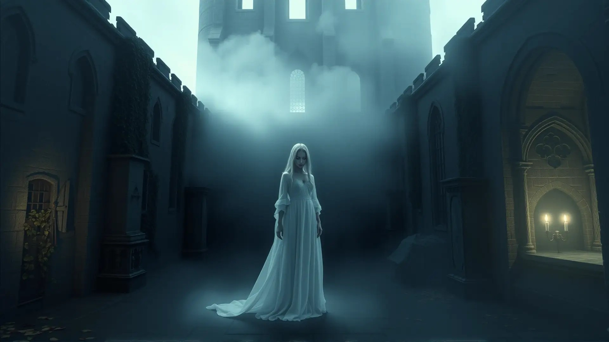
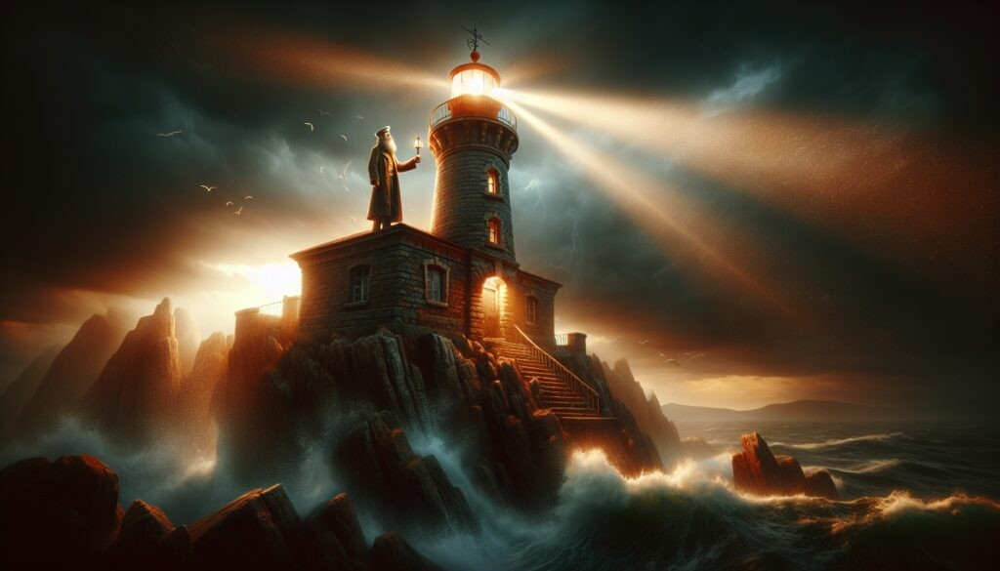

Caso curioso #1: La dama de blanco
Vecinos de la Mansión Victoriana reportan haber visto a una mujer vestida de blanco caminando por el jardín cada medianoche. Descubre la historia completa detrás del avistamiento.
Ver caso
Vecinos de la Mansión Victoriana reportan haber visto a una mujer vestida de blanco caminando por el jardín cada medianoche. Descubre la historia completa detrás del avistamiento.
Ver caso
A pesar de llevar décadas desconectado, el Faro del Ahogado se enciende algunas noches de tormenta. Te contamos qué dicen los pescadores de la zona.
Ver caso